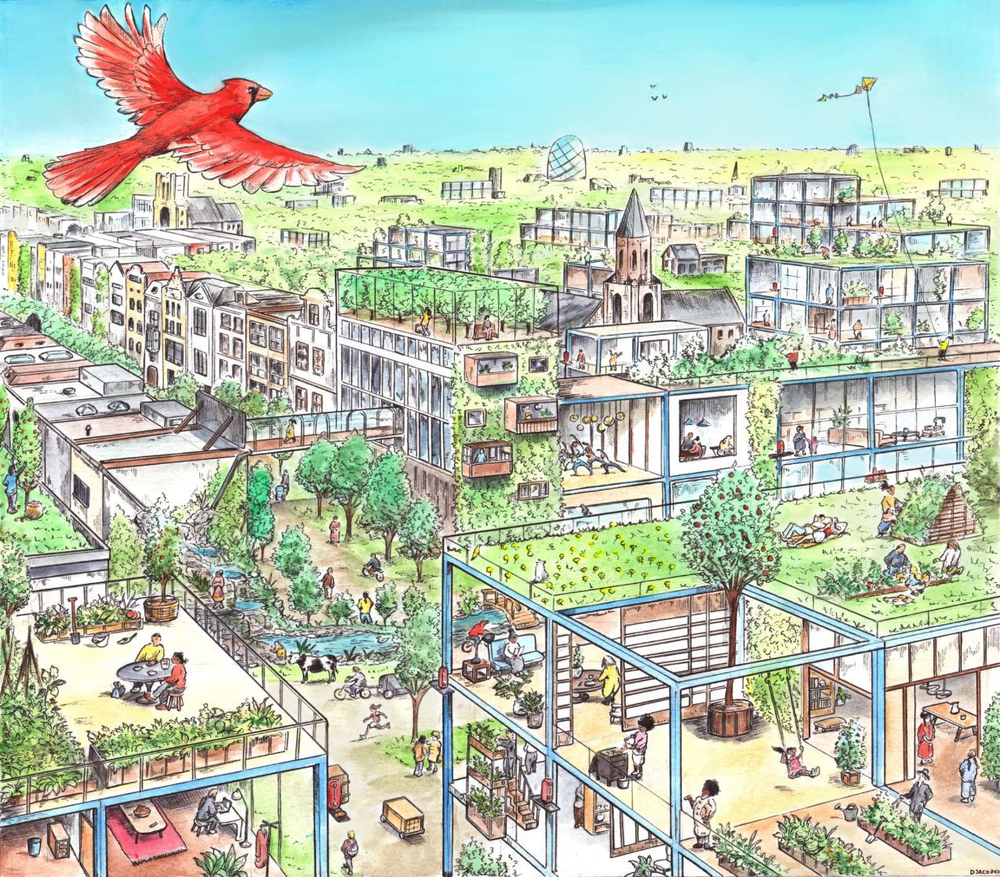

The old man and the bird
by Aël Magnard. Paris, France
It had been years since the bird heard the last trucks,
saws, and men cutting down the trees, killing its friends, and destroying its home. The colorful
bird was singing on its tree, waiting for the Old Man to tell him stories. The Old Man told him about men’s
cities: lush forests of blue, green, and gold, far away from the bird’s home. The stories were so different
from the tales of the bird’s grandfather, who told him about dark, grey places of fear and
misery.
He was happy. The Old Man was here. The Old Man always talked to the bird, sometimes to the trees of the forest. He thought they did not understand him, for they did not share a language. He had always said, in the old times, ‘Birds scream at the top of their lungs in horrified hellish rage every morning at daybreak to warn us all of the truth, but sadly we don’t speak bird.’ Little did he know, the little bird, and the forest, understood the Old Man. They were good friends, but unable to share their experiences.
One day, the bird decided to see the world for himself. It would be a long and tedious journey, but the bird was hopeful about it. He first went to see the Old Man to ask him for advice.
‘I’m going out of the forest to see the world’ tweeted the bird.
The Old Man answered, not understanding him: ‘Hello little bird, ready to go out and explore the wide world on your own I see. You’ll see, it is beautiful, now that we, humans beings, have finally made peace with Mother Nature. No more plastics, toxic chemicals, pesticides, or grey fumes coming from fossil fuel powerplants. No more overexploitation, no more greed driving us to destroy Earth’s treasures. Now, green cities with the bluest skies. Families in gardens, adults reconciling with the nature they once feared. Kindness, compassion, and service are universally accepted and expected. I hope you’ll find some friends during your journey. Farewell, little bird.’
Little did they understand each other, but the bird could tell that the Old Man was happy to see him. And maybe a little sad at the same time.
‘Don’t worry’ said the bird, ‘I’ll be back soon.’
The Old Man let a tear roll down his cheek.
The bird flew across emeralds seas and sapphire skies, across mountain tops kissed with snow. He flew across deserts of golden sands and blue waters of tranquility. The bird learned that the world was a beautiful but fragile place, as the Earth showed him the scars man left on her. He flew through rains, storms, sandstorms, and even blizzards (the accelerated forces of natural selection had made him a very tough bird, almost a super bird) and learned that no matter how dark the sky could be at night, the day would eventually come. No matter how the sky was filled with black clouds of grey lighting, sandstorms, or freezing ice, the sun would shine again. Yes, the little bird learned that hope would exist as long as that beautiful yet fragile world would. He learned that preserving that beauty was the only way to preserve hope. And he was glad that the friends of the Old Man had helped preserve his forest.
A few weeks later, the bird arrived at his first human settlement. (He explored the wilderness for some time, even though the city was only a few hours away). Strangely, he almost mistook the city for some alien forest, all green and blue. It wasn’t the cities his grandfather told him about. It was merrier, greener, quieter. There, the bird met a young puppy, with white fur.
‘Hello, puppy’” he said. The non-humans animals could understand each other, while humans animals had lost that ability since they walked away from harmony with Mother Nature.
‘Hello, bird.’
‘I’ve never seen a colorful bird like you before,’ said the dog. ‘Who are you?’
‘My friend, call me Birdie,’ responded the Bird. ‘You’re my friend right?’
‘I could use one,” said the dog. ‘My name is Wouf’
‘Have you ever been outside the City’” Asked the bird.
‘I haven’t, I am still a young puppy and I have been told that outside my comfort zone (the couch) is a dangerous place to be.’
‘Everybody says that Wouf; until they realize that it is not a very dangerous place to be but an exciting one.’
‘If you say so. You come from a faraway place, after all, you must know what you’re talking about.’ said the dog.
‘Well. sometimes I do. Sometimes, I don’t. Would you like to explore the outskirts of the city with me?’
‘I’d love to, my flying friend.’
Birdie and Wouf started their journey exploring the city’s wild outskirts. They went to the hills, through flowers and encountered a few unfamilar species of insect (that Birdie ate).
A few hours after the sun was set, they found a young couple on the sweet green grass. The pair talked about the stars and how they were beautiful. They talked about the Earth, about love, friendship, and all those marvelous things you can feel yet not see. They laughed a lot and finally fell asleep in each other’s arms. The dog, who understood man’s language offered to translate what the young human couple said to the bird.
In the morning, the bird gently tweeted and the dog woofed softly as the sound of the hills woke the young duo. They saw the bird and the dog.
‘He is so cute,’ said the boy. He loved dogs. The girl rather liked the bird. Maybe they had something to teach them.
‘Hello bird, hello dog,’ said the girl. ‘My name is Lia and here’s my boyfriend, Peter.’
The dog translated for the little bird, but he already knew, of course, that the boy and the girl were together. Love was universal.
‘I’m Wouf and this is my friend, Birdie.’ replied the dog, pointing his muzzle toward the flying creature. The boy who liked dogs understood Wouf, and they all became friends and made friendship bracelets. Because that’s what friends do.
The bird asked the humans if they wanted to explore the world with him. They told him they’d be glad to go with him. They packed their bags full of what they called ‘green equitable tech’ - solar-powered cameras, field recorders, and other devices that would enable them to record what they saw and heard on their journey. Soon enough, the little group went out in the wild, explored ancient and forgotten cities, and met new people, animals, and ideas. The young couple became married and adopted the dog (who was free to come and go out of the house as he pleased) and lived a happy life. Meanwhile, the bird learned to talk to the trees.
A few years later, they saw each other at the Old Man’s funeral. They were sad and cried a lot, but were happy too, for his body was to become part of the Earth again. During the funeral, there were almost as many non-human animals as they were humans.
For the first time in many years, the bird experienced sadness. Wouf grew older, faster than Birdie. The man, Peter (who was not young anymore, except in his head) learned the bird’s language, (he was terrible at it, but he tried) for he knew that when the dog eventually passed away, they would not be able to share their experiences.
However, Wouf lived longer than anyone could hope. The bird eventually found happiness again. They all went on a trip to see the wonderful world once more. This time around, they were able to take a shuttle to see it from above. It was magical and at this moment, like all astronauts that came before them, they understood how this world was their responsibility and how beautiful and fragile it was. Like hope. They all thought that they must take care of it, for the dog while he was there, and all the dogs that would come after him.
After Wouf’s death, the bird went back to the forest to talk to the trees and to die in peace. (He was very old when Wouf died). He knew that Peter’s children would take care of the forest, like their parents and the Old Man before them. Birdie was glad he had the chance to travel the world and tell his story to all the birds in the forest. And now that his story was over, it was time for someone else to take his place, so the story of hope would live in the hearts of all living inhabitants of Earth.

He was happy. The Old Man was here. The Old Man always talked to the bird, sometimes to the trees of the forest. He thought they did not understand him, for they did not share a language. He had always said, in the old times, ‘Birds scream at the top of their lungs in horrified hellish rage every morning at daybreak to warn us all of the truth, but sadly we don’t speak bird.’ Little did he know, the little bird, and the forest, understood the Old Man. They were good friends, but unable to share their experiences.
One day, the bird decided to see the world for himself. It would be a long and tedious journey, but the bird was hopeful about it. He first went to see the Old Man to ask him for advice.
‘I’m going out of the forest to see the world’ tweeted the bird.
The Old Man answered, not understanding him: ‘Hello little bird, ready to go out and explore the wide world on your own I see. You’ll see, it is beautiful, now that we, humans beings, have finally made peace with Mother Nature. No more plastics, toxic chemicals, pesticides, or grey fumes coming from fossil fuel powerplants. No more overexploitation, no more greed driving us to destroy Earth’s treasures. Now, green cities with the bluest skies. Families in gardens, adults reconciling with the nature they once feared. Kindness, compassion, and service are universally accepted and expected. I hope you’ll find some friends during your journey. Farewell, little bird.’
Little did they understand each other, but the bird could tell that the Old Man was happy to see him. And maybe a little sad at the same time.
‘Don’t worry’ said the bird, ‘I’ll be back soon.’
The Old Man let a tear roll down his cheek.
The bird flew across emeralds seas and sapphire skies, across mountain tops kissed with snow. He flew across deserts of golden sands and blue waters of tranquility. The bird learned that the world was a beautiful but fragile place, as the Earth showed him the scars man left on her. He flew through rains, storms, sandstorms, and even blizzards (the accelerated forces of natural selection had made him a very tough bird, almost a super bird) and learned that no matter how dark the sky could be at night, the day would eventually come. No matter how the sky was filled with black clouds of grey lighting, sandstorms, or freezing ice, the sun would shine again. Yes, the little bird learned that hope would exist as long as that beautiful yet fragile world would. He learned that preserving that beauty was the only way to preserve hope. And he was glad that the friends of the Old Man had helped preserve his forest.
A few weeks later, the bird arrived at his first human settlement. (He explored the wilderness for some time, even though the city was only a few hours away). Strangely, he almost mistook the city for some alien forest, all green and blue. It wasn’t the cities his grandfather told him about. It was merrier, greener, quieter. There, the bird met a young puppy, with white fur.
‘Hello, puppy’” he said. The non-humans animals could understand each other, while humans animals had lost that ability since they walked away from harmony with Mother Nature.
‘Hello, bird.’
‘I’ve never seen a colorful bird like you before,’ said the dog. ‘Who are you?’
‘My friend, call me Birdie,’ responded the Bird. ‘You’re my friend right?’
‘I could use one,” said the dog. ‘My name is Wouf’
‘Have you ever been outside the City’” Asked the bird.
‘I haven’t, I am still a young puppy and I have been told that outside my comfort zone (the couch) is a dangerous place to be.’
‘Everybody says that Wouf; until they realize that it is not a very dangerous place to be but an exciting one.’
‘If you say so. You come from a faraway place, after all, you must know what you’re talking about.’ said the dog.
‘Well. sometimes I do. Sometimes, I don’t. Would you like to explore the outskirts of the city with me?’
‘I’d love to, my flying friend.’
Birdie and Wouf started their journey exploring the city’s wild outskirts. They went to the hills, through flowers and encountered a few unfamilar species of insect (that Birdie ate).
A few hours after the sun was set, they found a young couple on the sweet green grass. The pair talked about the stars and how they were beautiful. They talked about the Earth, about love, friendship, and all those marvelous things you can feel yet not see. They laughed a lot and finally fell asleep in each other’s arms. The dog, who understood man’s language offered to translate what the young human couple said to the bird.
In the morning, the bird gently tweeted and the dog woofed softly as the sound of the hills woke the young duo. They saw the bird and the dog.
‘He is so cute,’ said the boy. He loved dogs. The girl rather liked the bird. Maybe they had something to teach them.
‘Hello bird, hello dog,’ said the girl. ‘My name is Lia and here’s my boyfriend, Peter.’
The dog translated for the little bird, but he already knew, of course, that the boy and the girl were together. Love was universal.
‘I’m Wouf and this is my friend, Birdie.’ replied the dog, pointing his muzzle toward the flying creature. The boy who liked dogs understood Wouf, and they all became friends and made friendship bracelets. Because that’s what friends do.
The bird asked the humans if they wanted to explore the world with him. They told him they’d be glad to go with him. They packed their bags full of what they called ‘green equitable tech’ - solar-powered cameras, field recorders, and other devices that would enable them to record what they saw and heard on their journey. Soon enough, the little group went out in the wild, explored ancient and forgotten cities, and met new people, animals, and ideas. The young couple became married and adopted the dog (who was free to come and go out of the house as he pleased) and lived a happy life. Meanwhile, the bird learned to talk to the trees.
A few years later, they saw each other at the Old Man’s funeral. They were sad and cried a lot, but were happy too, for his body was to become part of the Earth again. During the funeral, there were almost as many non-human animals as they were humans.
For the first time in many years, the bird experienced sadness. Wouf grew older, faster than Birdie. The man, Peter (who was not young anymore, except in his head) learned the bird’s language, (he was terrible at it, but he tried) for he knew that when the dog eventually passed away, they would not be able to share their experiences.
However, Wouf lived longer than anyone could hope. The bird eventually found happiness again. They all went on a trip to see the wonderful world once more. This time around, they were able to take a shuttle to see it from above. It was magical and at this moment, like all astronauts that came before them, they understood how this world was their responsibility and how beautiful and fragile it was. Like hope. They all thought that they must take care of it, for the dog while he was there, and all the dogs that would come after him.
After Wouf’s death, the bird went back to the forest to talk to the trees and to die in peace. (He was very old when Wouf died). He knew that Peter’s children would take care of the forest, like their parents and the Old Man before them. Birdie was glad he had the chance to travel the world and tell his story to all the birds in the forest. And now that his story was over, it was time for someone else to take his place, so the story of hope would live in the hearts of all living inhabitants of Earth.
Illustration by Dustin Jacobus

About
the judges
Home
Contact
Stories
Donate